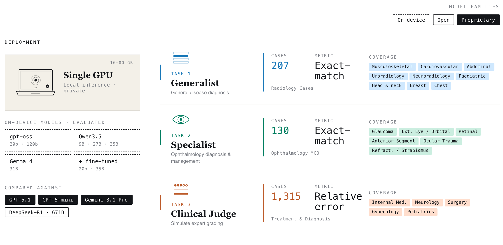
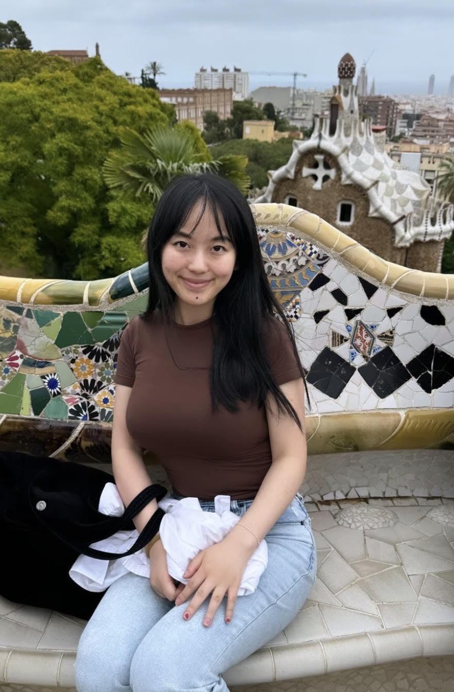
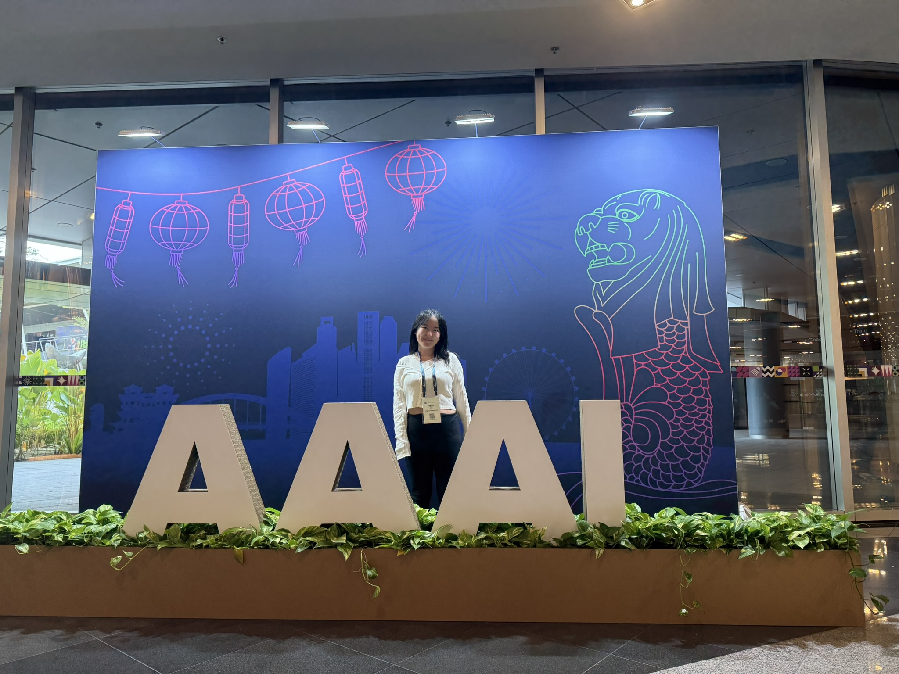
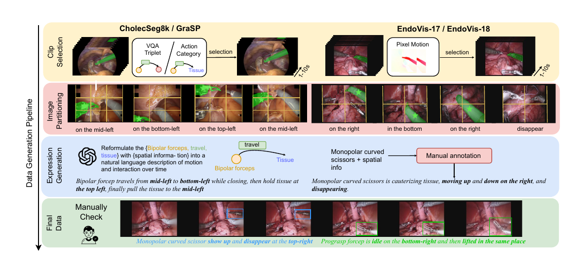
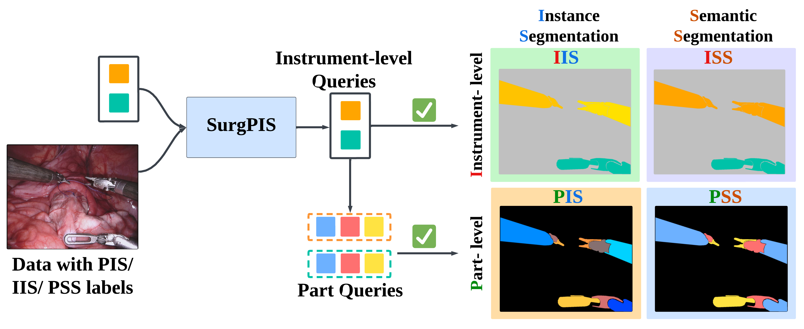
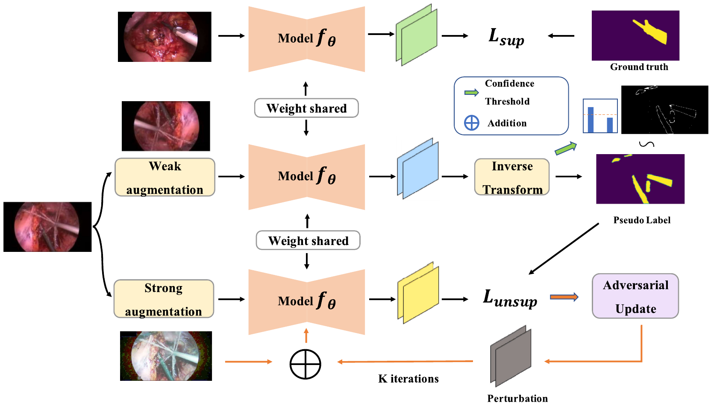
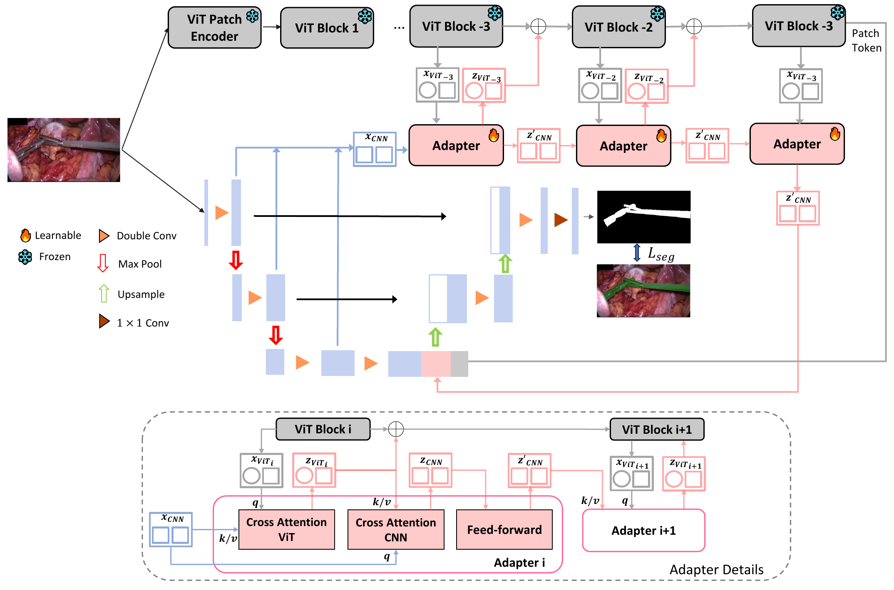
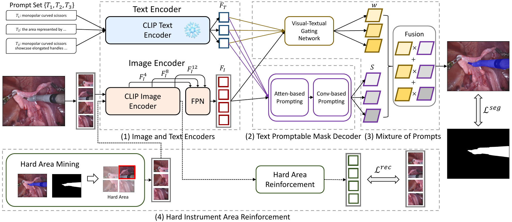
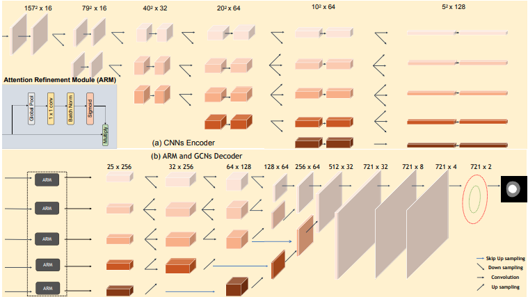

AI for Science / Applied AI / AI for Health
Short Bio
I am an applied AI researcher focusing on AI for health. I want to contribute to leveraging AI to make human life better, especially through clinical AI, biomedical AI, health monitoring, and broader AI for science.
Previously, I was a fully funded PhD researcher in the Smart Medical Imaging CDT programme at King's College London. I obtained my master's degree at Imperial College London, focusing on medical imaging and robotics, and my undergraduate degree in electrical engineering from the University of Liverpool. I previously interned at Viridien, formerly CGG, as a machine learning engineer.
Research Interests
My research interests include computer vision, AI for science, multimodal models, and robotics. My current research focuses on agentic frameworks for biomedical applications.
News
- I joined UHN and Vector Institute as a Research Fellow.
-
I attended AAAI 2026 in Singapore.

- One paper got accepted by AAAI.
Selected Papers

Where It Moves, It Matters: Referring Surgical Instrument Segmentation via Motion
Prograsp forceps on the left travels around then stays idle.
Prograsp forceps is travelling around then clamping on the right.
Large needle driver is suturing tissue on the left.
Large needle driver on the right is looping tissue with the needle and thread.


SegMatch: Semi-supervised Surgical Instrument Segmentation
Nature Scientific Reports 2025 [Paper]



Regression of Instance Boundary by Aggregated CNN and GCN
ECCV 2020 [Paper]
Education
King's College London
2021 - 2025. PhD in AI for Medical Imaging. Supervised by Prof. Tom Vercauteren and Prof. Miaojing Shi.
Imperial College London
2020 - 2021. MRes in Medical Imaging and Robotics, focusing on Artificial Intelligence and Machine Learning. Individual project supervised by Dr. Stamatia (Matina) Giannarou and Prof. Ben Glocker.
University of Liverpool
2017 - 2020. BEng in Electrical Engineering. First-class honours. Final year project supervised by Prof. Yao-chun Shen and Prof. Yalin Zheng.
Experience
Viridien
Machine Learning Engineer Intern, Jun 2021 - Feb 2022
Worked on 3D vision for seismic imaging, synthetic data generation, and AI-assisted geoscience workflows.
UCLA
Summer Research Intern, Jul 2019 - Sep 2019
Developed deep learning methods for hemorrhagic stroke detection and segmentation on CT images. Supervised by Dr. Fabien Scalzo and Prof. David S Liebeskind.
Honors
- Hamlyn Prize, awarded for high overall performance on the MRes at Imperial College London, 2020.
- Meritorious Winner, Mathematical Contest in Modeling, 2018.
- Vice President, Women in Engineering Society, University of Liverpool, 2018 - 2020.
Review Services
- MICCAI 2024
- MICCAI 2025
- IEEE Transactions on Medical Imaging * 2
- ECCV 2026
- Pattern Recognition and Computer Vision * 2
- International Journal of Computer Vision * 1